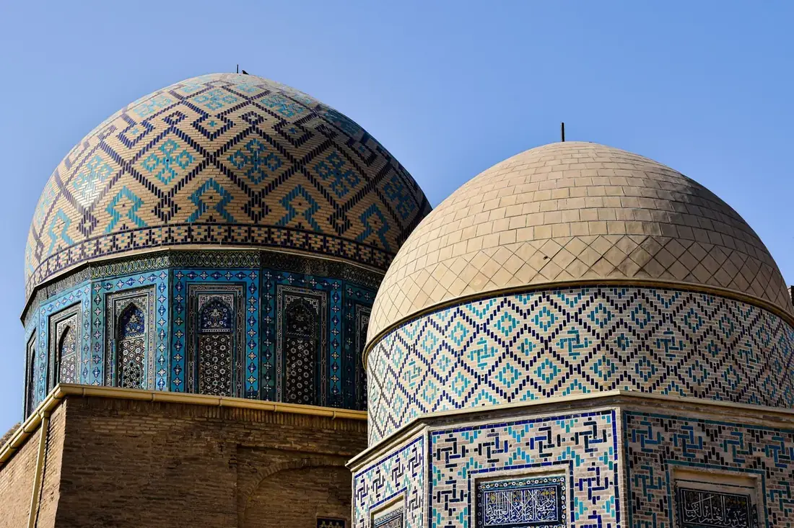
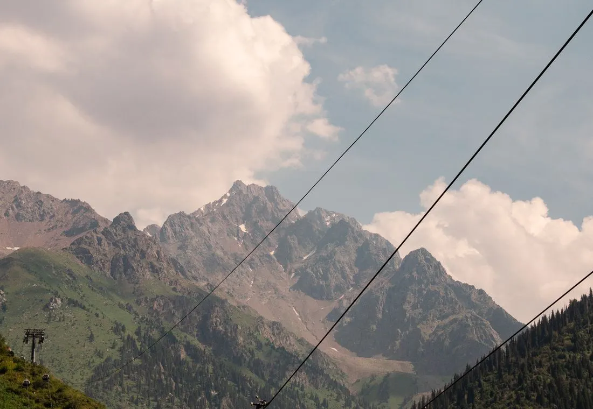
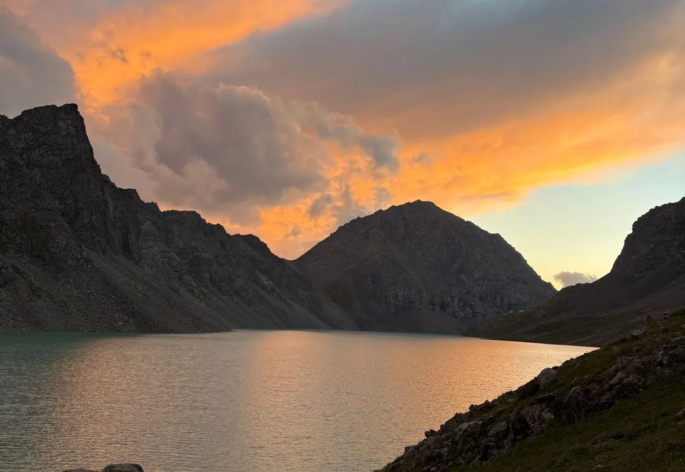
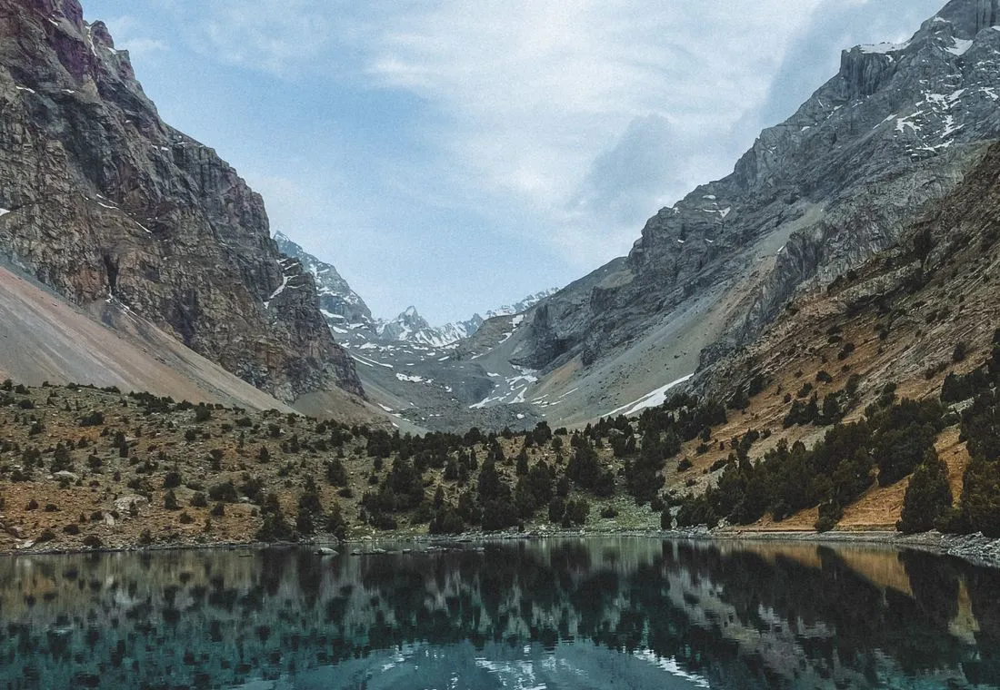
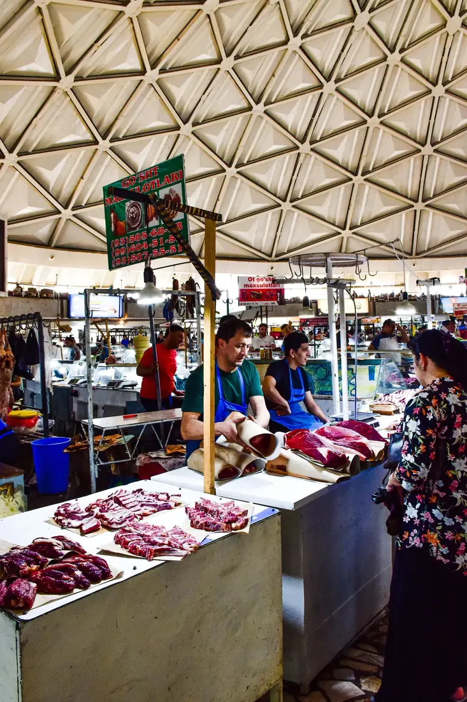

8 дн.🔒 Готовится
8 дн.🔒 ГотовитсяUZ
Классический Узбекистан
Хива · Бухара · Самарканд · Ташкент
Хива, Бухара, Самарканд и Ташкент — старт в Хиве по субботам
от… с человека
Смотреть тур →Индивидуальные туры и туры в небольших группах по Узбекистану — бирюзовые купола Самарканда, Бухары и Хивы, юрты в пустыне, горные озёра и самое тёплое гостеприимство. Мы всё организуем, вы просто путешествуете.
Узнать больше об УзбекистанеОт Хивы до Самарканда и Ферганской долины за одну поездку — транспорт, гиды и отели берём на себя.
Самарканд, Бухара и Хива — голубые жемчужины Шёлкового пути, связанные скоростными поездами.
Горы вокруг Алматы, красные стены Чарынского каньона и священный город Туркестан.
Альпийские озёра, юрты кочевников, кони на бескрайних пастбищах и берега Иссык-Куля.
Древний Пенджикент, Худжанд на Сырдарье и Памир — крыша мира.
По шесть проверенных маршрутов в каждой стране — откройте тур, чтобы увидеть карту, программу по дням и цену.
8 дн.🔒 ГотовитсяХива, Бухара, Самарканд и Ташкент — старт в Хиве по субботам

5 дн.🔒 ГотовитсяДве жемчужины Шёлкового пути за пять дней
 10 дн.🔒 Готовится
10 дн.🔒 ГотовитсяОт Хивы до Самарканда с ночью в юрте в пустыне
 7 дн.🔒 Готовится
7 дн.🔒 ГотовитсяЗиярат к великим имамам и суфийским шейхам
 15 дн.🔒 Готовится
15 дн.🔒 ГотовитсяУзбекистан, Таджикистан, Казахстан и Кыргызстан за 15 дней

4 дн.🔒 ГотовитсяГород, Медеу, Большое Алматинское озеро и Чарын
 5 дн.🔒 Готовится
5 дн.🔒 ГотовитсяКаньоны и горные озёра юго-востока Казахстана
 8 дн.🔒 Готовится
8 дн.🔒 ГотовитсяАлматы, озёра, Туркестан и Астана
 4 дн.🔒 Готовится
4 дн.🔒 ГотовитсяПаломничество в духовную столицу тюркского мира
 4 дн.🔒 Готовится
4 дн.🔒 ГотовитсяДревние петроглифы, цветные горы и поющий песок
 4 дн.🔒 Готовится
4 дн.🔒 ГотовитсяФутуристическая столица и «казахская Швейцария»
 7 дн.🔒 Готовится
7 дн.🔒 ГотовитсяТёплое озеро, красные скалы, беркутчи и каньоны
 5 дн.🔒 Готовится
5 дн.🔒 ГотовитсяЮрты, лошади и высокогорное озеро на 3016 м
 9 дн.🔒 Готовится
9 дн.🔒 ГотовитсяЛучшее в Кыргызстане за девять дней

6 дн.🔒 ГотовитсяЛедниковое озеро и источники Алтын-Арашана
 6 дн.🔒 Готовится
6 дн.🔒 ГотовитсяКаменный караван-сарай и ночи в юртах
 4 дн.🔒 Готовится
4 дн.🔒 Готовится3000-летний город и огромный ореховый лес
 5 дн.🔒 Готовится
5 дн.🔒 ГотовитсяИскандеркуль, Семь озёр и древний Пенджикент
 10 дн.🔒 Готовится
10 дн.🔒 Готовится«Крыша мира» от Душанбе до Оша
3 дн.🔒 ГотовитсяКороткая поездка к озёрам Фанских гор
8 дн.🔒 ГотовитсяГород Шёлкового пути и озёра Фанских гор
 6 дн.🔒 Готовится
6 дн.🔒 ГотовитсяГиссар, Истаравшан, Худжанд и согдийский Пенджикент

7 дн.🔒 ГотовитсяПоход с палатками между изумрудными озёрами
Не нашли подходящий тур? Составим индивидуальный маршрут для пары, семьи или группы.
Короткие фильмы о городах, культуре и природе — посмотрите перед поездкой.
Видео с официального канала Комитета по туризму Узбекистана и международных СМИ (Euronews, BBC, Insider, Eater) · Смотреть на YouTube →
Для путешественников-одиночек и пар из любой страны: фиксированные даты, англоговорящие гиды, всё организовано.
Закажите отдельную услугу — гида, транспорт, отель, встречу в аэропорту или eSIM — без покупки тура.
Отобранные местные специалисты. Реальные отзывы; бронь и оплата безопасно через Moviy Nomad.
Выберите места, количество ночей, отели, транспорт и гида — маршрут на карте и примерная цена сразу.
Собрать тур →


Это не только памятники. Это плов из огромного казана, утро на базаре и чай с новыми друзьями.




Наша команда живёт в Узбекистане и знает каждую улицу, гида и тайное место.
Отели, поезда, трансферы, гиды и входные билеты — в одном понятном пакете.
Халяльное питание, время для намаза и комфортный темп для семей с детьми.
Гиды на русском и английском; на турецком и арабском — по запросу.
Без скрытых доплат — вы заранее видите, что входит в стоимость.
Живой менеджер в WhatsApp или Telegram на протяжении всей поездки.
За 2,5 года команда Moviy Travel организовала поездки для более чем 10 000 путешественников. Moviy Nomad — та же команда, гиды и водители, теперь для гостей со всего мира: лицензированный туроператор (DMC) по Узбекистану — Хива, Бухара, Самарканд, Ташкент и не только.
✓Лицензированный туроператор — Комитет по туризму Республики Узбекистан, лицензия № 887333
Наши поездки в Instagram: @moviy_travel58 тыс. подписчиков · 600+ публикаций с реальными поездками→Расскажите о датах, составе группы и пожеланиях в WhatsApp или Telegram.
Мы составим маршрут по дням с понятной ценой для вашей группы.
Встретим вас в аэропорту и позаботимся обо всём остальном.
Настоящие сообщения из чата наших путешественников, перевод с узбекского.
“Спасибо за ваш труд и заботу. Я решила путешествовать раз в год — с вами, вместе с друзьями и близкими.”
“Обслуживание на высшем уровне: наш водитель Нодирбек относился ко всем как к родным, и долгая дорога совсем не чувствовалась. Если сомневаетесь — смело езжайте, не пожалеете.”
“Ездила с родителями, им так понравилось, что мы уже планируем следующий год. Сначала сомневалась — турфирм сейчас много, — но было правда здорово.”
“Было даже лучше, чем мы ожидали. Собрать 500 человек вместе — это непросто. Пожалуйста, организуйте больше таких поездок!”
“Эта неделя стала для меня по-настоящему незабываемой — может, потому что это была моя первая поездка. Вернулась с чудесными впечатлениями и воспоминаниями о прекрасных людях.”
“Огромное спасибо Ильёсбеку и его команде — они честно трудились, чтобы мы хорошо отдохнули. В группе мы нашли много новых друзей.”
Фото и впечатления наших путешественников. Путешествовали с нами? Добавьте свои!
Пока историй нет — станьте первым.
Граждане многих стран могут посетить Узбекистан, Казахстан и Кыргызстан без визы или по простой электронной визе. Напишите нам страну паспорта — мы проверим актуальные правила.
Весна (апрель–июнь) и осень (сентябрь–октябрь) идеальны для городов. Лето — сезон гор и озёр Кыргызстана и Таджикистана.
Да. Мы организуем индивидуальные туры для пар и семей, а также групповые туры и программы для турагентств.
Большая часть еды в регионе — халяль. Также можем выстроить программу с учётом времени намаза и посещения святых мест.
Напишите нам в WhatsApp или Telegram. После согласования программы мы подтвердим бронь и пришлём реквизиты для оплаты.
Да. Мы обеспечиваем приём групп и партнёрские цены для агентств.
Выберите удобный способ связи — пришлём идеи, программу и цену.
+998 99 980 42 14 · Safina Qozoqboyeva